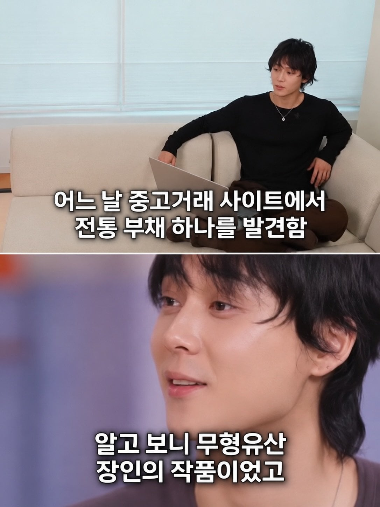
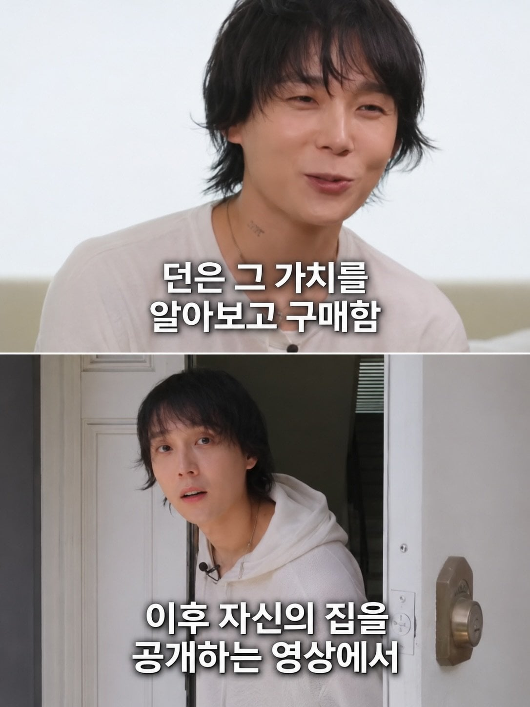
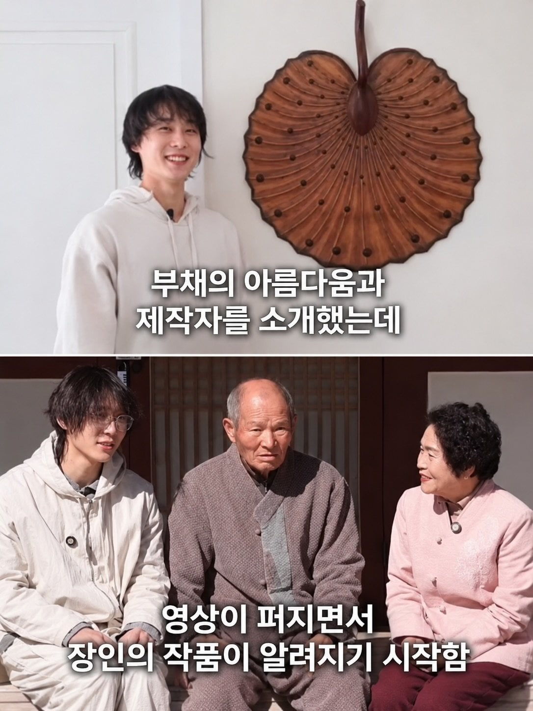
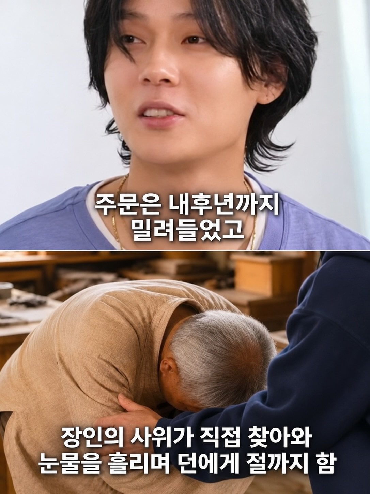
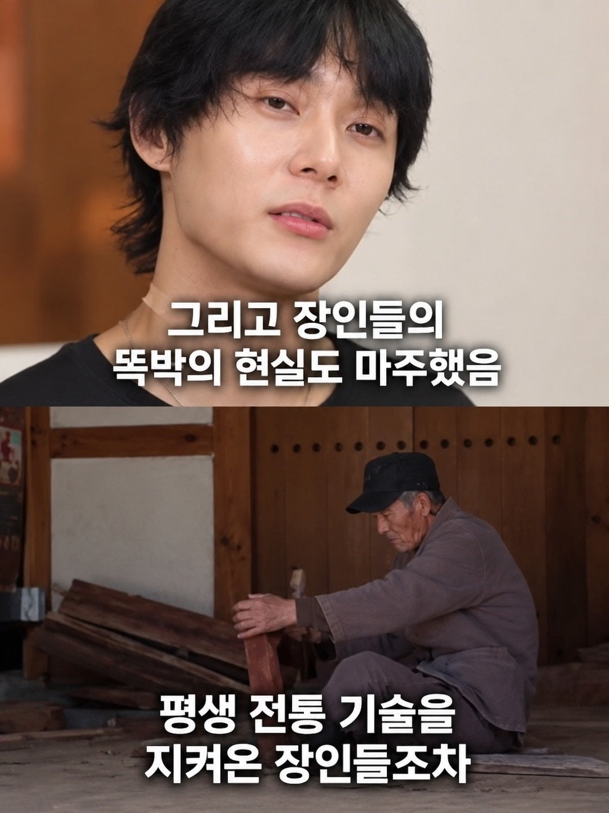
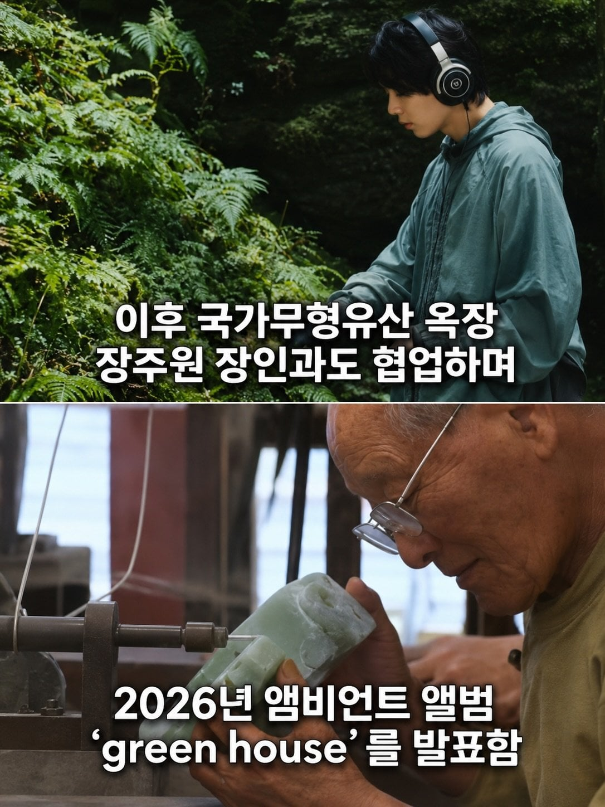

부채가 아우라가 넘침 그냥 존나 가지고 싶음
야가 가가????
'이게 내 직업의 쓰임새일까?'
이 생각을 할 때 저 사람도 얼마나 벅차올랐을까. 사람이 살면서 소명의식을 느끼기가 진짜 쉽지 않은데 그 귀한 경험을 했네
현아하고 사귄다 했을 때 던 성격 아는 모든 사람들이 존나 걱정했었는데 지금 존나 잘사는게 너무 보기가 좋음
진국일세 진짜 사람 잘 만나야 하는구만
저거가지고 앨범을만든다고? ㄹㅇ 아티스트가 돼버렸네
현아남편??